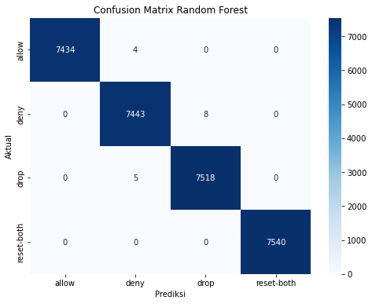

Project setelah UTS
Nama : Dina Violina
NIM : 210411100004
Kelas : Proyek Sains Data (B)
Tujuan :
Untuk melakukan klasifikasi prediksi jaringan data yang dikirim dari jaringan komputer, outputnya 4 yaitu allow” yang berarti diizinkan, “deny” berarti ditolak, “drop” berarti dibuang, “reset-both” berati setel ulang. Sehingga hasil dari klasifikasi ini akan mengidentifikasi prediksi sebuah jaringan firewall tersebut memiliki reaksi action apa.
Untuk menentukan prediksi firewall harus mengetahui ciri-ciri sebagai berikut : - Source Port - Destination Port - NAT source port - Bytes - Bytes sent - Bytes Received - Packets - Elapsed Time (sec) - pkts_sent - pkts_received
Dataset berupa kumpulan data log jaringan yang dikumpulkan oleh organisasi swasta. Log lalu lintas jaringan dikumpulkan dari tanggal 18 hingga 27 Mei 2021. catatan log yang digunakan diambil dari firewall yang digunakan oleh organisasi. Internet diakses oleh banyak orang tanpa terkecuali hacker dan cracker. Dengan alasan tertentu mereka melakukan penyusupan yang dapat merugikan para pemilik server dan jaringan komputer. Salah satu tools yang dapat digunakan untuk melakukan tindakan preventif terhadap serangan jaringan komputer dengan menggunakan firewall. Firewall adalah sistem keamanan jaringan yang membatasi akses yang tidak sah ke jaringan dan melindungi sistem dan data dari seragan eksternal. Tujuan firewall menciptakan keamanan koneksi antara jaringan pribadi dan jaringan internet.
. ### Mengidentifikasi jumlah data Mengidentifikasi jumlah data merupakan langkah awal untuk memahami skala dataset yang akan kita lakukan pengolahan. Dengan mengetahui jumlah baris (observasi) dan kolom (fitur) atau gambaran umum tentang ukuran data. Jumlah dataset sebanyak 65532 dengan rincian sebagai berikut : Pada fitur atau kolom Action terdapat 4 output sebagai berikut : - allow 37640 - deny 14987 - drop 12851 - reset-both 54
import modul yang akan digunakan
import numpy as np import pandas as pd from scipy import stats import matplotlib.pyplot as plt import seaborn as sns import pickle from sklearn.preprocessing import LabelEncoder from sklearn.model_selection import train_test_split from sklearn.preprocessing import StandardScaler, MinMaxScaler from sklearn.metrics import accuracy_score from sklearn.linear_model import LogisticRegression from sklearn.svm import SVC from sklearn.ensemble import RandomForestClassifier from sklearn.tree import DecisionTreeClassifier from sklearn.naive_bayes import GaussianNB
# variabel data digunakan untuk menyimpan data yang dipanggil menggunakan library pandas. data = pd.read_csv('firewall.csv')
data
65532 rows × 12 columns
jumlah_data = data.shape[0] print("Jumlah Data Firewall :", jumlah_data)
Jumlah Data Firewall : 65532
Identifikasi setiap target kelas didapatkam Allow menjadi kelas yang paling dominan karena hasilnya lebih tinggi dan memiliki jarak perbedaan yang jauh pada target kelas lainnya. Sehingga, pada data ini jika langsung dilakukan pengolahan klasifikasi akan mendapatkan hasil yang tidak sesuai atau terjadi kesalahan prediksi. Untuk menangani hal seperti ini perlu dilakukan balancing data untuk memberikan keseimbangan nilai yang dihasilkan.
action_counts = data['Action'].value_counts() print("Sebaran kelas target pada kolom Action") print(action_counts)
Sebaran kelas target pada kolom Action allow 37640 deny 14987 drop 12851 reset-both 54 Name: Action, dtype: int64
Internet Firewall Data Pada dataset ini terdapat 12 fitur dengan jumlah data sebanyak 65532.
Source Port :Port sumber yang digunakan dalam koneksi jaringan. Port ini menunjukkan port yang digunaakan oleh komputer atau perangkat untuk mengirimkan paket data.
Destination Port : Port tujuan dalam koneksi jaringan. Port ini menunjukkan port yang dituju oleh komputer atau perangkat penerima untuk menerima paket data.
NAT source port : Port sumber Network Address Trnslation (NAT) yang digunakan dalam koneksi jaringan. NAT adalah teknik yang digunakan untuk mengalihkan alamat IP atau port dalam paket data untuk menghubungkan beberapa perangkat ke internet dengan satu alamat IP.
NAT destination port : Port tujuan NAT yang digunakan dalam koneksi jaringan. Ini adalah port tujuan setelah melalui proses NAT.
Action : Kolom target yang akan diprediksi dalam pemodelan. Nilai-nilai di kolom ini menunjukkan tindakan yang diambil dalam koneksi jaringan, dengan target “allow” yang berarti diizinkan, “deny” berarti ditolak, “drop” berarti dibuang, “reset-both” berarti setel ulang.
Bytes : Jumlah total byte dalam koneksi jaringan. Hal ini mengukur besarnya data yang ditransmisikan dalam koneksi tersebut.
Bytes sent :Jumlah byte yang dikirim dalam koneksi jaringan. Kolom ini mengukur besarnya data yang dikirim dari sumber ke tujuan.
Bytes Received : Jumlah byte yang diterima dalam koneksi jaringan. Ini mengukur besarnya data yang diterima oleh penerima.
Packets : Jumlah total paket data yang dikirim dalam koneksi jaringan. Paket adalah unit data yang dikirim dalam jaringan.
Elapsed Time (sec) : Waktu yang dibutuhkan dalam koneksi jaringan, diukur dengan satuan detik. Kolom ini menunjukkan durasi dari koneksi.
pkts_sent : Kolom yang berisi jumlah paket data yang dikirim dalam koneksi jaringan.
pkts_received : Kolom yang berisi jumlah paket data yang diterima dalam koneksi jaringan.
Berdasarkan skala ukur dapat dibedakan menjadi 4 jenis sebagai berikut : 1. Nominal
Jenis data nominal yaitu data hanya mengandung unsur penamaan. Pada pengolahan data ini, jenis data nominal terdapat pada kolom Cation yang terdiri dari allow, denny, drop, dan reset-both tanpa urutan tertentu. 2. Ordinal
Data ordinal adalah data yang memiliki tingkatan atau peringkat, namun jarak antara nilai-nilainya tidak terdefinisi secara jelas. Contoh : tingkat pendidikan SD, SMP,SMA, Sarjana, Magister, Doktor 3. Interval
Data interval adalah data yang memiliki tingkatan atau peringkat dengan jarak antar nilai yang terdefinisi secara konsisten. Meskipun memiliki nol mutlak, tetapi nol tersebut tidak memiliki arti mutlak (mis. suhu di Celcius atau Fahrenheit). Contoh: Jika terdapat kolom Elapsed Time (sec) yang menyatakan waktu dalam detik. 4. Rasio
Data rasio memiliki tingkatan atau peringkat dengan jarak antar nilai yang terdefinisi secara konsisten dan memiliki nol mutlak yang memiliki arti mutlak. Data rasio memungkinkan operasi matematika seperti penambahan, pengurangan, perkalian, dan pembagian. Contoh : Kolom yang memiliki jenis data rasio pada data firewall ini adalah kolom Bytes, Bytes Sent, Bytes Received, Packets, dan pkts_sent.
# jumlah fitur dari data data.shape
(65532, 12)
# nama-nama fitur pada data data.columns
Index(['Source Port', 'Destination Port', 'NAT Source Port', 'NAT Destination Port', 'Action', 'Bytes', 'Bytes Sent', 'Bytes Received', 'Packets', 'Elapsed Time (sec)', 'pkts_sent', 'pkts_received'], dtype='object')
Mengetahui tipe data dari masing-masing kolom atau fitur.
data.dtypes
Source Port int64 Destination Port int64 NAT Source Port int64 NAT Destination Port int64 Action object Bytes int64 Bytes Sent int64 Bytes Received int64 Packets int64 Elapsed Time (sec) int64 pkts_sent int64 pkts_received int64 dtype: object
Eksplorasi data awal merupakan langkah penting dalam memahami karakteristik dataset. Salah satu cara untuk melakukan eksplorasi data adalah dengan melakukan penggrafikan fitur (feature visualization)atau visualisasi ciri-ciri atau fitur dari dataset dengan grafik. Pada eksplorasi data firewall ini menggunakan visualisasi data menggunakan grafik batang, scatter plot, line plot, dan diagram lingkaran.
fig, axes = plt.subplots(nrows=4, ncols=3, figsize=(15, 15)) fig.tight_layout(pad=3.0) # Menambahkan ruang antar subplot # Menggunakan loop untuk membuat dan menampilkan histogram for i, ax in enumerate(axes.flatten()): if i < len(data.columns): # Pastikan indeks tidak melebihi jumlah kolom data if data[data.columns[i]].dtype == 'object' or data[data.columns[i]].dtype == 'int64': data[data.columns[i]].hist(ax=ax) ax.set_title(f'Histogram {data.columns[i]}') # Menampilkan grafik plt.show()
action_counts = data['Action'].value_counts() # Membuat grafik batang plt.figure(figsize=(8, 6)) plt.bar(action_counts.index, action_counts.values) plt.xlabel('Action') plt.ylabel('Jumlah') plt.title('Jumlah Kasus berdasarkan Action') plt.show()
plt.figure(figsize=(8, 6)) plt.hist(data['Bytes'], bins=20, color='skyblue', edgecolor='black') plt.xlabel('Bytes') plt.ylabel('Frekuensi') plt.title('Distribusi Bytes') plt.show()
plt.figure(figsize=(8, 6)) plt.scatter(data['Bytes Sent'], data['Bytes Received'], alpha=0.5) plt.xlabel('Bytes Sent') plt.ylabel('Bytes Received') plt.title('Scatter Plot Bytes Sent vs Bytes Received') plt.show()
action_counts = data['Action'].value_counts() plt.figure(figsize=(8, 8)) plt.pie(action_counts, labels=action_counts.index, autopct='%1.1f%%', colors=['lightcoral', 'lightblue', 'lightgreen']) plt.title('Persentase Data berdasarkan Action') plt.show()
plt.figure(figsize=(8, 6)) plt.boxplot(data['Bytes'], vert=False) plt.xlabel('Bytes') plt.title('Box Plot Bytes') plt.show()
data.info() data.head()
<class 'pandas.core.frame.DataFrame'> RangeIndex: 65532 entries, 0 to 65531 Data columns (total 12 columns): # Column Non-Null Count Dtype --- ------ -------------- ----- 0 Source Port 65532 non-null int64 1 Destination Port 65532 non-null int64 2 NAT Source Port 65532 non-null int64 3 NAT Destination Port 65532 non-null int64 4 Action 65532 non-null object 5 Bytes 65532 non-null int64 6 Bytes Sent 65532 non-null int64 7 Bytes Received 65532 non-null int64 8 Packets 65532 non-null int64 9 Elapsed Time (sec) 65532 non-null int64 10 pkts_sent 65532 non-null int64 11 pkts_received 65532 non-null int64 dtypes: int64(11), object(1) memory usage: 6.0+ MB
Describe data digunakan untuk memberikan nilai statistik deskriptif dari suatu dataframe dari masing-masing fitur dengan hasil sebagai berikut : - Jumlah data (Count) : memberikan informasi tentang jumlah data yang tidak bernilai ‘NaN’ setiap kolom. Jumlah ini mencakup data yang tidak bernilai NaN atau missing Value. - Rata-rata (Mean) : Rata-rata atau mean adalah nilai tengah dari distribusi data. Ini dihitung dengan menjumlahkan semua nilai dan kemudian mdibagi dengan jumlah total dari data. - std (standar deviasi) : Standar deviasi mengukr sejauh mana data tersebar dari rata-rata. Sebaran data, standar deviasi yang tinggi menunjukkan bahwa data cenderung lebih tersebar atau tingkat variabilitas yang lebih besar dalam dataset. - Nilai Minimum (Min) : menunjukkan nilai terkecil pada setiap kolom - 25% atau Q1 : Menunjukkan nilai kuartil pertama menunjukkan nilai yang membagi 25% data terandah. Baris ini memberikan informasi tentang distribusi data di bagian bawah. - 50% : Median atau Q2, adalah nilai yang membagi data menjadi dua bagian setara. Jika data diurutkan, median berada di tengah-tengah. Ini memberikan gambaran tentang pusat distribusi. - 75% atau Q3 : Baris 75% atau kuartil ketiga(Q3) menunjukkan nilai membagi 75% data terendah. Ini memberikan informasi tentang distribusi data di bagian atas. - max : Nilai terbesar dalam setiap kolom. Baris ini memberikan gambaran tentang rentang nilai yang terdapat dalam dataset.
data.describe()
Penjelasan :
Pada data firewall ini, langkah untuk describe data menggunakan fungsi ‘describe’ yang terdapat pada library pandas di python. Dengan menggunakan describe(), akan mempercepat untuk mendapatkan gambaran tentang distribusi dan statistik dasar dari dataset.
Melakukan identifikasi data yang error atau inkonsisten. Ketika menemui data duplikat, yang bisa dilakukan adalah memperbaiki dan melakukan penghapusan. Mengidentifikasi data duplikat penting untuk dilakukan pada pengolahan data untuk memastikan integritas data dan hasil analisis yang akurat. Dari data sejumlah 65532 ditemukan jumlah data yang duplikat sebanyak 8362 data. Sehingga, jumlah data duplikat akan dihilangkan pada tahap preprocessing.
Untuk mengetahui nilai duplikat dari dataframe yang disimpan dalam variabel ‘data’ menggunakan : - data.dupicated() : pada dataframe digunakan untuk melakukan identifikasi baris-baris yang duplikat dalam dataset. - sum() : fungsi sum ditulis setelah ‘data.duplicated()’, karena dalam fungsi tersebut telah didapatkan seri boolean. Llau, untuk menjumlahkan nilai ‘True’ . Nilai ‘true’ dianggap setara dengan nilai 1 dan nilai ‘False’ atau yang tidakd uplikat disetarakan dengan nilai 0 dalam operasi penjumlahan. Hasil dari fungsi ‘sum)’ memberikan jumlah baris yang teridefntifikasi sebagai data duplikat.
jumlah_duplikat = data.duplicated().sum() print("Jumlah data yang duplikat:", jumlah_duplikat)
Jumlah data yang duplikat: 8362
Missing value setiap kolom pada dataset perlu dilakukan pengecekan karena memastikan data yang akan digunakan dalam model tidak mengandung nilai yang tidak lengkap. Dari pengecekan data firewall dengan total 65532 data ini tidakk ditemukan missing value. Yang artinya, semua kolom terdapat kelengkapan isian data. Sehingga, pada tahap preprocessing tidak perlu dilakukan penghapusan missing value. Penting untuk menangani nilai yang hilang karena banyak algoritma pembelajaran mesin tidak dapat menangani nilai yang hilang secara langsung.
# Menghitung apakah ada nilai yang hilang dalam setiap kolom missing_values = data.isna().any() print("Apakah ada nilai yang hilang dalam setiap kolom:") print(missing_values)
Apakah ada nilai yang hilang dalam setiap kolom: Source Port False Destination Port False NAT Source Port False NAT Destination Port False Action False Bytes False Bytes Sent False Bytes Received False Packets False Elapsed Time (sec) False pkts_sent False pkts_received False dtype: bool
Penjelasan
data.isna(), metode ini menghasilkan DatFrame yang telah disimpan sebelumnya dalam variabel data yang berisi nilai boolean yaitu (‘True’ atau ‘False’). Setiap elemen dalam DataFrame menjadi ‘True’ jika elemen teridentifikasi nilai yang hilang atau nilai kosong.
any : pada pengolahan datadrame boolean untuk menunjukkan apakah setiap kolom terdapat missing value.
Mengecek baris dengan nilai Null(NaN)
Untuk melakukan penghapusan baris atau kolom yang mengandung nilai null atau NaN dari Data dengan menggunakan dropna(). Diikuti dengan parameter inplace = True, sehingga perubahan akan langsung dilakukan pada DataFrame. Nilai nan akan dihapus dari DatFrame dan perubahan diterapkan langsung pada DatFrame. Namun, jika inplace menggunakan ‘false’ maka metide ini mengembalikan data baru dengan nilai null dihapus dan untuk menyimpannya memerlukan variabel baru. Namun, pada data ini tidak ditemukan data NaN(Not a Number).
Penggunaan data.isna() menghasilkan DataFrame yang ukurannya sama dengan DataFrame asli (data). Nilainya berupa ‘True’ dan ‘False, jika output ’true’ maka data menunjukkan nilai NaN pada posisi yang sesuai tabel diatas. namun, dari hasil pengecekan tersebut semua baris tidak diidentifikasi sebagai nilai NaN sehingga nilainya ‘False’
sum() digunakan untuk menghitung jumlah nilai ‘True’ atau nilai NaN di setiap kolom
data.isna()
print('Jumlah nilai NaN setiap kolom :') print(data.isna().sum())
Jumlah nilai NaN setiap kolom : Source Port 0 Destination Port 0 NAT Source Port 0 NAT Destination Port 0 Action 0 Bytes 0 Bytes Sent 0 Bytes Received 0 Packets 0 Elapsed Time (sec) 0 pkts_sent 0 pkts_received 0 dtype: int64
Kumpulan data yang berisi informasi data yang memiliki nilai atau karakteristik yang menyimpang dari yang lain, dikenal sebagai outlier. Outlier dapat dilakukan penghapusan supaya data lebih akurat karena jika outlier dibiarkan dapat menyebabkan kesimpulan yang tidak akurat dan keputusan yang dihasilkan salah.
Metode penghapusan outlier :
Pada pengolahan data ini deteksi outlier menggunakan Z-Score. Z-Score mengukur seberapa jauh suatu titik data dari mean dalam satuan standar deviasi. Nilai Z-Score yang tinggi atau rendah menunjukkan bahwa titik data tersebut berada jauh dari rata-rata. Berikut adalah tahapan-tahapan deteksi outlier dengan Z-Score:
1.) Hitung rata-rata dan standar deviasi
$= $
\(\sigma = \sqrt\frac{\sum{i=1}^n x_i - \mu}{n}\)
2.) Hitung Z-Score untuk setiap data - Hitung Z-score untuk setiap titik data dalam dataset dengan rumus berikut :
\(Z_i = \frac{x_i -\mu}{\mu}\)
\(x_i\) adalah nilai titik data, \(\mu\) adalah rata-rata, dan \(\sigma\) adalah standar deviasi.
3.) Tentukan ambang batas(threshold) - Menentukan ambang batas(threshold) yang akan digunakan untuk mengidentifikasi outlier.
4.) Identifikasi outlier - Mengidentifikasi titik data yang memiliki nilai Z-Score di atas atau di bawah nilai ambang batas yang ditentukan sebagai outlier. Titik-titik ini dianggap jauh dari rata-rata dan dianggap sebagai nilai yang tidak biasa dalam dataset.
Contoh implementasi perhitungan manual dengan menggunakan algoritma Z-Score pada data berikut ini:
$Rata-rata(_X) = = = 14 $
$Standar Deviasi(_X) = = = 3.72 $
$Rata-rata(_Y) = = = 31 $
$Standar Deviasi(_Y) = = = 6.24 $
\(Rata-rata(\mu_Z) =\frac{\sum{Z}}{n} = \frac{5+8+10+4+15+12+18}{7}= 10.3\)
$Standar Deviasi(_Z) = = = 4.7 $
\(Z_X = \frac{X -\mu_X}{\sigma_X}\)
\(Z_Y = \frac{Y -\mu_Y}{\sigma_Y}\)
\(Z_Z = \frac{Z -\mu_Z}{\sigma_Z}\)
3.) Tentukan ambang batas(threshold) - Misalnya, menentukan nilai ambang batas sebagai \(\pm 2\) standar deviasi.
4.) Identifikasi outlier
\(Outlier_X :\) Jika $|Z_x| > $Threshold, maka outlier
\(Outlier_Y :\) Jika $|Z_x| > $Threshold, maka outlier
\(Outlier_Z :\) Jika $|Z_x| > $Threshold, maka outlier
5.) Hasil
Pada data point 1 - |\(Z_X\)| = |-1.08| = 1.08 tidak melebih threshold, sehingga data point 1 pada fitur X bukan outlier.
|\(Z_Y\)| = |-0.96| = 0.96 tidak melebih threshold, sehingga data point 1 pada fitur Y bukan outlier.
|$Z_Z| = |-1.11|= 1.11 tdak melebih threshold, sehingga data point 1 pada fitur Z bukan outlier.
Pada data point 2 - |\(Z_X\)| = |0.27| = 0.27 tidak melebihi threshold, sehingga data point 1 pada fitur X bukan outlier.
|\(Z_Y\)| = |-0.16| = 0.16 tidak melebihi threshold, sehingga data point 1 pada fitur Y bukan outlier.
|$Z_Z| = |-0.49| =0.49 tidak melebihi threshold, sehingga data point 1 pada fitur Z bukan outlier.
Pada data firewall ini dilakukan deteksi outlier dilakukan pada kolom yang berisi nilai numeric menggunakan ZScore.Deteksi outlier tidak perlu dilakukan di semua kolom atau fitur dalam dataset. Pada datset ini yang dilakukan deteksi outlier adalah pada kolom ‘Bytes’, ‘Bytes Sent’, ‘Bytes Received’, ‘Packets’, ‘Elapsed Time (sec)’, ‘pkts_sent’, ‘pkts_received’ karena pada kolom ini sebagai variabel kuantitatif . Deteksi outlier tersebut didapatkan dengan hasil masing-masing kolom memiliki nilai outlier 1640.
numeric_columns = ['Bytes', 'Bytes Sent', 'Bytes Received', 'Packets', 'Elapsed Time (sec)', 'pkts_sent', 'pkts_received'] # Menghitung Z-score untuk setiap kolom numerik z_scores = np.abs(stats.zscore(data[numeric_columns])) # Menentukan ambang batas Z-score (misalnya, 3) threshold = 3 # Mengidentifikasi indeks baris yang memiliki outlier outlier_indices = np.where(z_scores > threshold) # Mengidentifikasi indeks baris yang memiliki outlier outlier_indices = np.where(z_scores > threshold) print("Indeks baris yang memiliki outlier:") print(outlier_indices[0]) print("Nilai outlier untuk setiap kolom:") outlier_values = data.iloc[outlier_indices[0]][numeric_columns] print(outlier_values) print("Jumlah outlier untuk setiap kolom:") outlier_counts = pd.DataFrame(outlier_values.apply(lambda x: x.count(), axis=0), columns=['Outlier Count']) print(outlier_counts)
Indeks baris yang memiliki outlier: [ 2 121 122 ... 65290 65296 65296] Nilai outlier untuk setiap kolom: Bytes Bytes Sent Bytes Received Packets Elapsed Time (sec) \ 2 238 118 120 2 1199 121 870 330 540 12 2308 122 8171028 105740 8065288 6637 149 124 481 150 331 2 1200 335 330 330 0 6 1200 ... ... ... ... ... ... 65286 481 150 331 2 1199 65289 118 118 0 1 1199 65290 324 150 174 2 1201 65296 11381441 121813 11259628 9309 119 65296 11381441 121813 11259628 9309 119 pkts_sent pkts_received 2 1 1 121 6 6 122 745 5892 124 1 1 335 6 0 ... ... ... 65286 1 1 65289 1 0 65290 1 1 65296 1741 7568 65296 1741 7568 [1640 rows x 7 columns] Jumlah outlier untuk setiap kolom: Outlier Count Bytes 1640 Bytes Sent 1640 Bytes Received 1640 Packets 1640 Elapsed Time (sec) 1640 pkts_sent 1640 pkts_received 1640
Penjelasan : 1. Menghitung Z-score
- Menggunakan stats.zscore dari modul scipy untuk menghhitung Z-score setiap nilai dalam kolom numerik.
Menentukan ambang batas
Mengidentifikasi Indeks Baris dengan Outlier
Menampilkan Indeks Baris dan Nilai Outlier dengan ‘np.where’
Menghitung dan menampilkan Jumlah Outlier untuk Setiap Kolom:
Menggunakan apply dan lambda:
outlier_values.apply(lambda x: x.count(), axis=0) digunakan untuk mengiterasi melalui setiap kolom dalam outlier_values dan menghitung jumlah nilai yang bukan NaN (tidak termasuk nilai yang hilang) dalam setiap kolom.
pd.DataFrame(…, columns=[‘Outlier Count’]) digunakan untuk membuat DataFrame baru dengan nama kolom “Outlier Count”. Outlier count berisi total dari nilai yang diidentifikasi sebagai oulier dalam kolom tersebut.
Hasil dari langkah pertama, yaitu jumlah outlier untuk setiap kolom, dimasukkan ke dalam kolom ini.
Berdasarkan identifikasi jumlah data pada 4 kelas terdapat ketidakseimbangan data, beberapa kelas memiliki lebih banyak sampel daripada yang lain. Karena ketidakseimbangan dapat mempengaruhi kinerja model, karena model dapat cenderung memprediksi kelas mayoritas. Maka data ini perlu dilakukan balancing data.
print("Sebaran kelas target pada kolom Action") print(action_counts)
Seleksi fitur
Berdasarkan banyak fitur pada data ini yaitu 12 fitur dengan 1 fitur adalah target atau kelas. Jadi terdapat 11 fitur yang akan dipertimbangkan, kolom mana yang memiliki pengaruh tinggi. Untuk mendapatkan fitur yang memiliki pengaruh tinggi perlu dilakukan seleksi fitur.
Cara kerja seleksi fitur ialah dengan menentukan fitur yang paling relevan dan melakukan pembobotan pada setiap fitur. Seleksi fitur sendiri bertujuan untuk meningkatkan efisiensi dan efektivitas hasil dari kinerja algpritma klasifikasi (Buani, 2021)
Tahap preprocessing adalah tahapan untuk mempersiapkan data sebelum dilakukan pembuatan model. Pada tahap preprocessing, data akan dibersihkan, diubah, dan disesuaikan agar data sesuai dengan kebutuhan pada model machine learning yang akan digunakan. Tahap preprocessing merupakan langkah-langkah untuk membersihkan dan menyiapkan data sebelum memasukkan ke dalam model.
Preprocessing yang akan dilakukan berdasarkan tahap data understanding yaitu :
Pada dua baris dianggap duplikat jika seluruh nilai dalam baris tersebut bernilai sama persis. Pada implementasi ini, menggunakan fungsi ‘drop_duplicates’ untuk menghapus duplikat. Pada tahap data understanding sebelumnya, telah melakukan pengecekan banyak data yang teridentifikasi duplikat, sehingga pada tahap preprocessing ini dilakukan penghapusan data duplikat yang dapat mengganggu analisis dan menghasilkan hasil yang tidak akurat. . Dengan menggunakan library pandas, dapat menggunakan ‘drop_duplicates()’ untuk membersihkan DataFrame dari baris-baris yang identik atau duplikat.
# variabel data yang menyimpan data dilakukan drop atau penghapusan data yang duplikat data.drop_duplicates(inplace=True)
Untuk melakukan penghapusan data yang duplikat dengan menggunakan perintah di bawah ini :
‘data’ : data adlaah variabel yang menyimpan dataset atau sebagai objek DataFrame
‘drop_duplicates’ : Metode ini digunakan untuk menghapus baris yang teridentifikasi duplikat pada DataFrame. FUngsi ini akan mempertahankan satu abris dari setiap duplikat dan baris duplikat lainnya akan dihapus.
‘inplace=True’ : Parameter ini idgunakan untuk mengubah DataFrame yang ada secara langsung tanpa membuat salinan data baru. Namun, jika ‘inplace=False’, metode ini akan mengembalikan DataFrame yang sudah diubah atau pada tahap ini sudah dilakukan penghapusan.
Jika terdapat baris-baris duplikat dalam DataFrame, mereka akan dihapus, dan DataFrame akan diubah secara langsung (jika inplace=True). Jika tidak ada duplikat, DataFrame tetap tidak berubah.
numeric_columns = ['Bytes', 'Bytes Sent', 'Bytes Received', 'Packets', 'Elapsed Time (sec)', 'pkts_sent', 'pkts_received'] # Menghitung Z-score untuk setiap kolom numerik z_scores = np.abs(stats.zscore(data[numeric_columns])) # Menentukan ambang batas Z-score (misalnya, 3) threshold = 3 # Mengidentifikasi indeks baris yang memiliki outlier outlier_indices = np.where(z_scores > threshold) # Mengidentifikasi indeks baris yang memiliki outlier outlier_indices = np.where(z_scores > threshold) print("Indeks baris yang memiliki outlier:") print(outlier_indices[0]) print("Nilai outlier untuk setiap kolom:") outlier_values = data.iloc[outlier_indices[0]][numeric_columns] print(outlier_values) print("Jumlah outlier untuk setiap kolom:") outlier_counts = pd.DataFrame(outlier_values.apply(lambda x: x.count(), axis=0), columns=['Outlier Count']) print(outlier_counts) # Menghapus baris yang memiliki outlier data_cleaned = data.drop(data.index[outlier_indices[0]]) print("Data setelah dibersihkan dari outlier") print(data_cleaned)
Indeks baris yang memiliki outlier: [ 2 121 122 ... 56994 57000 57000] Nilai outlier untuk setiap kolom: Bytes Bytes Sent Bytes Received Packets Elapsed Time (sec) \ 2 238 118 120 2 1199 121 870 330 540 12 2308 122 8171028 105740 8065288 6637 149 124 481 150 331 2 1200 335 330 330 0 6 1200 ... ... ... ... ... ... 65286 481 150 331 2 1199 65289 118 118 0 1 1199 65290 324 150 174 2 1201 65296 11381441 121813 11259628 9309 119 65296 11381441 121813 11259628 9309 119 pkts_sent pkts_received 2 1 1 121 6 6 122 745 5892 124 1 1 335 6 0 ... ... ... 65286 1 1 65289 1 0 65290 1 1 65296 1741 7568 65296 1741 7568 [1582 rows x 7 columns] Jumlah outlier untuk setiap kolom: Outlier Count Bytes 1582 Bytes Sent 1582 Bytes Received 1582 Packets 1582 Elapsed Time (sec) 1582 pkts_sent 1582 pkts_received 1582 Data setelah dibersihkan dari outlier Source Port Destination Port NAT Source Port NAT Destination Port \ 0 57222 53 54587 53 1 56258 3389 56258 3389 3 50553 3389 50553 3389 4 50002 443 45848 443 5 51465 443 39975 443 ... ... ... ... ... 65526 51710 43069 65147 43069 65527 63691 80 13237 80 65528 50964 80 13485 80 65529 54871 445 0 0 65530 54870 445 0 0 Action Bytes Bytes Sent Bytes Received Packets \ 0 allow 177 94 83 2 1 allow 4768 1600 3168 19 3 allow 3327 1438 1889 15 4 allow 25358 6778 18580 31 5 allow 3961 1595 2366 21 ... ... ... ... ... ... 65526 allow 70 70 0 2 65527 allow 314 192 122 6 65528 allow 4680740 67312 4613428 4675 65529 drop 70 70 0 1 65530 drop 70 70 0 1 Elapsed Time (sec) pkts_sent pkts_received 0 30 1 1 1 17 10 9 3 17 8 7 4 16 13 18 5 16 12 9 ... ... ... ... 65526 8 2 0 65527 15 4 2 65528 77 985 3690 65529 0 1 0 65530 0 1 0 [55805 rows x 12 columns]
Balancing data dilakukan menggunakan RandomOverSampler. Dari hasil pengujian didapatkan hasil terbaik menggunakan RandomOverSampler meningkatkan akurasi prediksi.Hasil penelitian yang dilakukan oleh Iwan Binanto menyatakan bahwa dengan menggunakan balancing Random Over Sampler didapatkan akurasi yang tinggi pada permodelan. Metode balancing RandomOverSampler bertujuan untuk menambahkan salinan acak dari sampel-sampel yang sudah ada pada kelas tersebut. Proses kerja sebagai berikut : - menentukan kelas minorittas yang memiliki jumlah sampel yang lebih sedikit - menentukan jumlah sampel tambahan, dengan menghitung perbedaan jumlah pada mayoritas dan minoritas.
Penanganan Imbalance data jika kolom target Action terdapat ketidakseimbangan berupa oversampling atau undersampling
Algoritma Random Over Sampler :
Hitung jumlah sampel kelas mayoritas dan kelas minoritas
Hitung jumlah yang perlu ditambahkan
Hasil dari Nnew ini adalah yang akan ditambahkan pada kelas minoritas agar seimbang dengan kelas mayoritas.
Pilih instansi secara acak dari kelas minoritas
Tambahkan Sampel Baru ke Dataset:
Contoh perhitungan manual :
Pilih sampel secara acak dari kelas minoritas
Tambahkan Sampel Baru ke Dataset
Dengan menggunakan bahasa pemrogra,an python, untuk melakukan penerapan metode balancing Random Over Sampler dengan mengunakan library untuk oversampling , seperti imbalanced-learn dari imblearn. Berikut adalah penggunaan Random Over Sampler :
from imblearn.over_sampling import RandomOverSampler from collections import Counter
Data sebelum di balancing, dilakukan pemisahan fitur dan target
X = data.drop('Action', axis=1) y = data['Action'] print("Output data asli sebelum dilakukan balancing data") print( Counter(y))
Output data asli sebelum dilakukan balancing data Counter({'allow': 37439, 'drop': 11635, 'deny': 8042, 'reset-both': 54})
# inisialisasi randomOverSampler dengan variabel ros ros = RandomOverSampler(random_state=42) # Melakukan oversampling pada dataset X_ros, y_ros = ros.fit_resample(X,y) print('Output data resampled : ', Counter(y_ros))
Output data resampled : Counter({'allow': 37439, 'drop': 37439, 'deny': 37439, 'reset-both': 37439})
Pada proses oversampling dataset , ‘X’ adalah matriks fitur dan ‘y’ adlaah vektor target. Metode ‘fit_resample’ akan melakukanobversampling pada dataset dan mengembalikan dataset yang baru yang sudah dilakukan oversample.
print('Jumlah data setelah dilakukan balancing resampled : ') print('Features',X_ros.shape) print('Target',y_ros.shape)
Jumlah data setelah dilakukan balancing resampled : Features (149756, 11) Target (149756,)
Data yang semula berjumlah 65532 disimpan di variabel ‘data’, setelah dilakukan preprocessing penghapusan data duplikat dan data oulier kemudian dilakukan balancing data berubah menjadi 149756. Setelah melakukan balancing data, data akan disimpan menjadi data baru lagi. Pada data ini, data yang telah diakukan pembersihan dan balancing data disimpan di variabel balanced_data.
# Menggabungkan kembali X_ros dan y_ros menjadi DataFrame balanced_data = pd.DataFrame(X_ros, columns=X.columns) balanced_data['Action'] = y_ros.reset_index(drop=True)
Setelah dilakukan penerapan metode balancing Oversampling, jumlah data dalam dataset meningkat. Karena Oversampling ini menambahkan jumlah sampel dari kelas minoritas dengan cara menggandakan atau menambahkan variasi pada sampel yang sudah ada.
jumlah_data = balanced_data.shape[0] print("Jumlah Data Firewall :", jumlah_data)
Jumlah Data Firewall : 149756
plt.figure(figsize=(12, 6)) plt.subplot(1, 2, 1) sns.countplot(x='Action', data=data, palette='Set1') plt.title("Distribusi Kelas Data Imbalance") plt.xlabel("Action") plt.ylabel("Jumlah") # plt.show() plt.subplot(1, 2, 2) sns.countplot(x='Action', data=pd.DataFrame(y_ros, columns=['Action']), palette='Set2') plt.title("Distribusi Kelas Data Setelah Balancing") plt.xlabel("Action") plt.ylabel("Jumlah") plt.tight_layout() plt.show()
Label Encoder digunakan untuk mengkonversi nilai pada kolom target ‘Action’ yang semula bersifat kategorikal ‘allow’ , ‘deny’, ‘drop’, dan ‘reset both’ diubah menjadi numerik.
X_ros = balanced_data.drop(columns=['Action']) label_encoder = LabelEncoder() y_ros = label_encoder.fit_transform(balanced_data['Action'])
X_ros sebagai variabel yang menghapus kolom target dari dataset awal.
label_encoder = LabelEncoder() membuat objek dari kelas LabelEncoder. LabelEncoder digunakan untuk mengubah label kategori menjadi bilangan bulat.
y_rose sebagai avriabel yang menyimpan label yang telah diubah menjadi bentuk numerik. Dengan ‘fit_transform ()’ mempelajari mapping antara tabel kategori dan bilangan bulat yang kemudian mengubah label katgeori menjadi bilangan bulat(transform)
Dalam menghasilnya performa pengolahan data, fungsi dari proses seleksi fitur menghasilkan dataset yang lebih ramping karena dalam seleksi fittur akan dilakukan pengurangan jumlah fitur / atribut yang diperoleh dari pengukuran fitur-fitur yang memiliki pengaruh signifkan terhadap kelas. Dalam seleksi fitur terdapat metode-metode yang digunakan untuk mengetahui fitur yang memberikan pengaruh terhadap kelas dari dataset yang digunakan.
Macam-macam seleksi fitur: - Information Gain
Seleksi fitur Information Gain dengan mengukur sejauh mana suatu fitur memberikan informasi yang berguna dalam memprediksi label kelas.
Correlation Based
Seleksi fitur Correlation Based dengan memilih fitur berdasarkan tingkat korelasi dengan variabel target.
Learner Based
Seleksi Learner Based melibatkan penggunaan model pembelajaran untuk mengevaluasi kontribusi setiap fitur. Model dibangun untuk memprediksi target, dan fitur dinilai berdasarkan pengaruhnya terhadap kinerja model.
Mutual Information
Seleksi fitur Mutual Information mengukur sejauh mana pengetahuan tentang nilai satu variabel memberikan informasi tentang nilai variabel lainnya. Pada mutual innformation, dengan menggunakan ’mutual_info_classif digunakan untuk mengevaluasi relevansi antara fitur-fitur dan kelas target dalam menanagani masalah klasifikasi. entropy
Principal Component Analysis (PCA)
Seleksi fitur dengan PCA digunakan untuk mengurangi dimensi data ke ruang fitur yang lebih rendah. Komponen utama yang dihasilkan adalah kombinasi linear dari fitur asli yang menyimpan varian maksimal.
Genetic Alghoritms Seleksi fitur genetic algorithms menerapkan konsep seleksi alam untuk menemukan subset fitur yang optimal. Pada genetic algorithms menggunakan konsep seleksi, crossover, dan mutasi untuk menghasilkan generasi baru dari subset fitur dan meningkatkan kualitasnya seiring waktu.
Pada tahap seleksi fitur pengolahan data klasifikasi ini dengan menggunakan mutual information.
Rumus Mutual Information )= \[I(A;Y) = \sum P(A,Y) .log_2 (\frac{P(A,Y)}{P(A).P(Y)}) \] dimana \(P(A,Y)\) adalah probabilitas kombinasi nilai \((A, Y), P(A)\) adalah probabilitas nilai A, dan \(P(Y)\) adalah probabilitas nilai Y.
Algoritma seleksi fitur mutual information :
Perhitungan Informasi untuk setiap fitur
Menghitung nilai informasi bersama antara setiap fitur dan variabel target(kelas) dalam dataset. Mutual Information dapat dihitung menggunakan formula atau fungsi yang mengukur seberapa banyak informasi yang dimiliki fitur tentang target.
Penilaian relevansi
Fitur-fitur dinilai berdasarkan nilai informasi bersama yang dihasilkan dari perhitungan sebelumnya. Fitur dengan nilai informasi bersama yang tinggi dianggap lebih relevan atau informatif terhadap variabel target. Mengurutkan fitur-fitur berdasarkan nilai Mutual Information dari yang tertinggi sampai terendah. Fitur dengan nilai Mutual Information yang lebih tinggi dianggap lebih informatif terkait dengan target(Irham et al., 2019).
Pemilihan fitur Sebagai hasil dari penilaian, dengan menentukan ambang atau kriteria tertentu untuk memilih subset fitur. Subset fitur yang melewati ambang relevansi dipertahankan, sementara yang di bawah ambang dapat dihapus.
Implementasi dalam kode :
Contoh perhitungan manual mutual information Dataset:
Langkah-langkah :
- Misalnya, berapa kali kombinasi (A=0, Y=1) muncul, (A=0, Y=0), dst.
Penjelasan : - Kombinasi (A=0, B=0): Terdapat 1 sampel (baris pertama). - Kombinasi (A=1, B=0): Terdapat 1 sampel (baris keempat). - Kombinasi (A=0, B=1): Terdapat 2 sampel (baris ketiga dan kelima). - Kombinasi (A=1, B=1): Terdapat 2 sampel (baris kedua dan keempat).
Hitung Probabilitas Masing-Masing Kombinasi:
P(A=0, Y=0) = 1 / total_sampel P(A=1, Y=0) = 1 / total_sampel P(A=0, Y=1) = 1 / total_sampel P(A=1, Y=1) = 2 / total_sampel
Pada contoh perhitungan manual dengan 5 jumlah baris dalam dataset dilakukan perhitungan probabilitas sebagai berikut : 1 Kombinasi(A=0, Y=0)
\[P(A=0, Y=0) = \frac{1}{5} \] \[P(A=0 ) = \frac{3}{5} (jumlah keseluruhan A=0 dalam dataset)\] \[P(Y=0 ) = \frac{2}{5} (jumlah keseluruhan Y=0 dalam dataset)\] \[I(A=0,Y=0 ) = \frac{1}{5}.log_2 (\frac{\frac{1}{5}}{\frac{3}{5}.\frac{2}{5}})\] \[I(A=0,Y=0 ) ≈ -0.464\] 2 Kombinasi (A=1, Y=0)
\[P(A=1, Y=0) = \frac{1}{5} \] \[P(A=1 ) = \frac{2}{5} (jumlah keseluruhan A=1 dalam dataset)\] \[P(Y=0 ) = \frac{2}{5} (jumlah keseluruhan Y=0 dalam dataset)\] \[I(A=0,Y=0 ) = \frac{1}{5}.log_2 (\frac{\frac{2}{5}}{\frac{2}{5}.\frac{2}{5}})\] \[I(A=1,Y=0 ) ≈ -0.464\] 3 Kombinasi (A=0, Y=1)
\[P(A=1, Y=0) = \frac{1}{5} \] \[P(A=1 ) = \frac{3}{5} (jumlah keseluruhan A=1 dalam dataset)\] \[P(Y=0 ) = \frac{3}{5} (jumlah keseluruhan Y=0 dalam dataset)\] \[I(A=0,Y=0 ) = \frac{1}{5}.log_2 (\frac{\frac{2}{5}}{\frac{3}{5}.\frac{3}{5}})\] \[I(A=1,Y=0 ) ≈ 0.464\]
4. Kombinasi (A=1, Y=0)
\[P(A=1, Y=0) = \frac{1}{5} \] \[P(A=1 ) = \frac{2}{5} (jumlah keseluruhan A=1 dalam dataset)\] \[P(Y=0 ) = \frac{3}{5} (jumlah keseluruhan Y=0 dalam dataset)\] \[I(A=0,Y=0 ) = \frac{1}{5}.log_2 (\frac{\frac{2}{5}}{\frac{2}{5}.\frac{3}{5}})\] \[I(A=1,Y=0 ) ≈ 0.311\]
Yang akan kita lakukan dalam menentukan nilai seleksi fitur pada pengolahan data klasifikasi firewall ini adalah sebagai berikut :
1.) Import library
Mengimpor fungsi mutual_info_classif dari modul feature_selection di scikit-learn.
%matplotlib inline digunakan untuk menampilkan plot secara langsung di notebook karena pengolahan data ini dilakukan dengan menggunakan Jupyter Notebook. 2.) Menghitung Informasi bersama
Menghitung skor informasi bersama untuk setiap fitur dalam dataset X terhadap variabel target y menggunakan metode Mutual Information. 3.) Menyimpan skor informasi bersama
Membuat objek Series Pandas untuk menyimpan skor informasi bersama.
Nama fitur diambil dari nama kolom dataset kecuali untuk kolom target ‘Action’. 4.) Visualisasi dengan bar plot
Visualisasi pada code di bawah ini dengan menggunakan batang horizontal untuk memvisualisasikan skor informasi bersama dari setiap fitur. 5.) Penambahan label pada plot / grafik
Pada sumbu x dan sumbu yang terdapat pada grafik diberikan label fitur dan label information gain.
Nilai numerik pada setiap batang diperlihatkan.
Semakin panjang batangnya, semakin informatif fitur terhadap variabel target. Sehingga nanti dari hasil seleksi fitur ini, batang yang memiliki panjang paling pendek akan dihapus atau dieliminasi.
from sklearn.feature_selection import mutual_info_classif %matplotlib inline # menghitung skor informasi bersama untuk setiap fitur dalam dataset X terhadap variabel target y. importances = mutual_info_classif(X_ros, y_ros) feat_importances = pd.Series(importances, balanced_data.columns[0:len(balanced_data.columns)-1]) # feat_importances = pd.Series(importances, data.columns) feat_importances.plot(kind='barh', color ='teal') plt.xlabel('Information Gain') plt.ylabel('Fitur') for i, v in enumerate(feat_importances): plt.text(v, i, f'{v:.2f}', color='black', va='center') plt.show
<function matplotlib.pyplot.show(close=None, block=None)>
# Pemisahan fitur dan target setelah oversampling X_selected = X_ros y_selected = y_ros importances = mutual_info_classif(X_selected, y_selected)
# Membuat DataFrame untuk menampilkan informasi fitur feat_importances = pd.DataFrame({ 'Fitur': balanced_data.columns[:-1], # Excluding the target variable 'Skor_Mutual_Info': importances }) # Menambahkan kolom ranking berdasarkan skor mutual info (urutkan dari yang tertinggi) feat_importances['Rank'] = feat_importances['Skor_Mutual_Info'].rank(ascending=False) # Menampilkan tabel dengan nama fitur, nilai mutual info, dan ranking fitur yang diurutkan sorted_feat_importances = feat_importances.sort_values(by='Skor_Mutual_Info', ascending=False) print(sorted_feat_importances)
Fitur Skor_Mutual_Info Rank 1 Destination Port 0.308676 1.0 2 NAT Source Port 0.278109 2.0 0 Source Port 0.242773 3.0 3 NAT Destination Port 0.048907 4.0 8 Elapsed Time (sec) 0.030184 5.0 6 Bytes Received 0.005338 6.0 9 pkts_sent 0.002782 7.0 7 Packets 0.001533 8.0 10 pkts_received 0.001375 9.0 5 Bytes Sent 0.000086 10.0 4 Bytes 0.000000 11.0
Setelah melakukan pemisahan fitur, kemudian melakukan split dataset dengan fungsi train_test_split yang digunakan untuk membagi dataset menjadi set pelatihan (train set) dan set pengujian (test set). Ini membantu dalam mengevaluasi kinerja model pada data yang tidak digunakan selama pelatihan. - X_ros: Matriks fitur (features) dari dataset yang telah di-resampled dengan menggunakan Random Over-Sampling (X_ros).
y_ros: Ini adalah vektor target (labels) yang sesuai dengan X_ros.
test_size=0.2: Ini menentukan proporsi data yang akan dialokasikan untuk test set. Dalam hal ini, 20% dari total data akan digunakan sebagai test set.
random_state=42: Ini digunakan untuk memastikan reproduktibilitas hasil. Jika kita memberikan nilai tertentu (dalam hal ini 42), maka setiap kali kita menjalankan fungsi ini, kita akan mendapatkan pembagian yang sama untuk set pelatihan dan set pengujian. Ini berguna ketika kita ingin hasil yang konsisten setiap kali kode dijalankan.
Hasil dari fungsi train_test_split adalah empat kumpulan data:
Split dataset yaitu melakukan pemisahan data menjadi dua bagian atau lebih. Split data atau pemisahan data yang dilakukan pada data ini dengan dua pemisahan, yaitu data akan digunakan untuk pelatihan dan akan digunakan untuk pengujian.
Split dataset atau pemisahan dataset adalah langkah yang penting dalam analisis data. Tujuannya adalah untuk membagi dataset menjadi dua lebih subset data yang berbeda. Pembagiannya yaitu data latih (training data) dan data uji (data testing).
Tujuan utama split dataset adalah sebagai berikut :
Sebagai pelatihan model untuk machine learning.
Evaluasi model, data uji digunakan untuk menguji kinerja model yang telah dilatih. Hal ini membantu untuk mengukur sejauh mana model mampu melakukan prediksi dengan benar pada data yang tidak digunakan selama pelatihan.
Pengukuran kinerja
Pencegahan overfitting, yaitu keadaan dimana model memilliki kinerja yang sangat baik pada data latih tetapi buruk pada data uji.
Pada pengolahan data ini, sebelum dilakukan split data yaitu dengan melakukan penghapusan fitur yang memiliki nilai pengaruh terendah yang kita dapatkan pada proses seleksi fitur. Niai terendah pada seleksi fitur kita dapatkan sebesar 0.00 pada kolom fitur Elapsed Time (sec). Sehingga pada split dataset, fitur yang memiliki nilai informasi terkecil akan dihapus.
Maka pada pengolahan code di bawah ini: - Variabel X_selected melakukan drop penghapusan fitur yang memiliki nilai terkecil dan fitur target. - Variabel ‘y_selected’ merupakan variabel target. Variabel target(‘Action’) ditentukan sebagai variabel ‘y’.
Penjelasan dari code yang digunakan pada split dataset ini:
Pada variabel X_selected dilakukan penghapusan kolom dengan ‘drop’ . Kolom yang dihapus ada 6 kolom yang didapatkan nilai terkecil pada seleksi fitur dan 1 kolom ‘Action’ yang berupa target dalam DataFrame yang disimpan pada variabel ‘balanced_data’.
Pada variabel ‘y_selected’ berisi kolom ‘Action’ dari ‘balanced_Data’. Variabel ini diasumsikan bahwa kolom ‘Action’ adalah kolom target atau label yang akan dilakukan prediksi.
Melakukan pengecekan jumlah data keseluruhan dan jumlah data uji dan data latih yang idgunakan pada split dataset dengan test_size 0.2 yang berarti data uji dilakukan 20% dan data latih sebesar 80% dari jumlah data. Variabel X_train yang berperan sebagai data latih berjumlah 119804 dan data yang dilakukan pengujian sebanyak 29952.
#Menghapus 5 kolom X_selected = balanced_data.drop(columns=['pkts_sent', 'pkts_received','Packets', 'Bytes Received', 'Bytes Sent', 'Bytes', 'Action']) y_selected = balanced_data['Action']
numerical_features = balanced_data.drop(columns=['Action'])
X_train, X_test, y_train, y_test = train_test_split(X_selected, y_selected, test_size=0.2, random_state=42)
print("Jumlah Data :", X_selected.shape[0]) print("Data Latih : ", X_train.shape[0]) print("Data Uji : ", X_test.shape[0])
Jumlah Data : 149756 Data Latih : 119804 Data Uji : 29952
print('Features',X_selected.shape) print('Target',y_selected.shape)
Features (149756, 5) Target (149756,)
# setelah seleksi fitur y_selected = label_encoder.fit_transform(balanced_data['Action'])
Kemudian setelah dilakukan split data, dilakukan normalisasi dengan menggunakan 2 jenis normalisasi yaitu ZScore dan MinMax.
Normalisasi data adalah proses mengubah nilai-nilai dalam dataset menjadi skala tertentu agar fitur-fitur dalam dataset memiliki skala yang seragam. Tujuan digunakannya normalisasi ini adalah untuk menghindari ketidakseimbangan skala yang bisa mempengaruhi performa . Dalam normalisasi, setiap fitur dalam dataset diubah dalam rentang tertentu, misalnya antara 0 hingga 1 atau -1 hingga 1.Pada pengolahan data internet firwall ini, saya menggunakan 2 jenis normalisasi yaitu sebagai berikut :
MinMaxScaler untuk mengubah rentang data menjadi [0, 1]. Ini penting jika Anda ingin menjaga rentang nilai yang konsisten di antara semua fitur Anda, terutama jika Dengan menggunakan algoritma yang sensitive terhadap skala. Dengan menerapkan Min-Max Scaling ke data serta data pelatihan dan pengujian secara terpisah.
Rumus MinMax :
\[MinMax = \frac{X- X_{\text{min}}}{X_{\text{max}} - X_{\text{min}}} \]
Keterangan : - $X$ : Nilai yang akan dinormalisasi - $X_{\text{min}}$ : Nilai minimum dari seluruh data - $X_{\text{max}}$ : Nilai maksimum dari seluruh data
Contoh implementasi :
\(X =\) [12,25,18,8,15]
Langkah-langkah yang harus diselesaikan :
1.) Menentukan \(X_{min}\) dan \(X_{max}\)
$X_{min} = {8}$ , $X_{max} = 25 $
2.) Menghitung \(X_{normalisasi}\) untuk setiap nilai \(X\) :
\(X_{\text{normalisasi}} = \frac{12 - 8}{25 - 8} = \frac{4}{17} \approx 0.24\)
\(X_{\text{normalisasi}} = \frac{25 - 8}{25 - 8} = 1\)
\(X_{\text{normalisasi}} = \frac{18 - 8}{25 - 8} = \frac{10}{17} \approx 0.59\)
$X_{} = = 0 $
\(X_{\text{normalisasi}} = \frac{15 - 8}{25 - 8} = \frac{7}{17} \approx 0.41\)
ZSore mengubah distribusi data menjadi distribusi normal standar. Membantu dalam meningkatkan konvergensi algoritma pembelajaran mesin yang menggunakan perhitungan jarak, seperti SVM atau K-Means. Anda menerapkan Z-Score ke data dan juga untuk data pelatihan dan pengujian secara terpisah.
Rumus ZScore :
\[Z =\frac{x - mean (x)}{std_{dev}} \]
Keterangan : - $Z =$ nilai yang akan dinormalisasi - mean ($x = $) rata-rata dari seluruh data - $std_{dev} = $ deviasi standar dari seluruh data
Langkah-langkah perhitungan manual normalisasi Z-score adalah sebagai berikut :
1.) Tentukan mean (mean(x)) dengan menghitung nilai rata-rata dari data. 2.) Menghitung deviasi standar $std_{dev}$ 3.) Menghitung Z-Score untuk setiap $x$ Contoh perhitungan manual normalisasi Z-Score pada sebuah dataset. $x = $ [15, 18, 20, 22, 25] Penyelesaian 1.) Mean $(x)$ $mean(x) = \frac{15+18+20+22+25}{5} = {100}{5} = {20}$ 2.) Deviasi standar $std_{dev}$ $std_{dev} = \sqrt \frac{\sum_{i=1}^5(mean(x))^2}{n}$ $std_{dev} = \sqrt \frac {(15-20)^2 + (18-20)^2 +(20-20)^2+(22-20)^2+(25-20)^2}{5}$ $std_{dev} = \sqrt \frac {25+4+0+4+25}{5}$ $std_{dev} = \sqrt \frac{58}{5}$ $ = \sqrt {11}{.6}$ $= {3.41}$ 3.) Menghitung Z-score untuk setiap $x$ $Z_1 = \frac {15-20}{3.41} \approx -1.47$ $Z_2 = \frac {18-20}{3.41} \approx -0.59$ $Z_3 = \frac {20-20}{3.41} \approx 0$ $Z_4 = \frac {22-20}{3.41} \approx 0.59$ $Z_5 = \frac {25-20}{3.41} \approx 1.47$ Jadi, contoh data diatas yang sudah dilakukan normalisasi Z-Score adalah :
Pada normalisasi, melakukan perhitungan rata-rata dan standar deviasi di setiap fitur pada X_train dengan menggunakan fit
transform, mengaplikasikan normalisasi berdasarkan jenis normalisasinya ke setiap nilai dalam set pelatihan menggunakan rata-rata dan standar deviasi yang dihitung sebelumnya.
Transform pada data pengujian(X_test) dengan transform(X_test) menggunakan rata-rata dan standar deviasi yang dihitung pada X_train untuk melakukan normalisasi pada set pengujian.
scaler = StandardScaler() X_train_standard = scaler.fit_transform(X_train) X_test_standard = scaler.transform(X_test)
minmax_scaler = MinMaxScaler() X_train_minmax = minmax_scaler.fit_transform(X_train) X_test_minmax = minmax_scaler.transform(X_test)
print("Data Latih Z Score : ", X_train_standard.shape[0]) print("Data Uji Z Score : ", X_test_standard.shape[0]) print("=============================================") print("Data Latih MinMax : ", X_train_minmax.shape[0]) print("Data Uji MinMax : ", X_test_minmax.shape[0])
Data Latih Z Score : 119804 Data Uji Z Score : 29952 ============================================= Data Latih MinMax : 119804 Data Uji MinMax : 29952
Menyimpan model normalisasi
Menyimpan model normalisasi MinMax dan Zscore menjadi file pikle yang akan kita gunakan untuk melakukan deployment setelah evaluasi model.Format pickle menjadi suatu cara untuk menyimpan model yang telah dilatih ke dalam file biner, termasuk model machine learning yang dapat diambil kembali. Dengan menyimpan file pickle, model yang telah k=dilatih dapat digunakan kembali untuk prediksi di lingkungan produksi tanpa harus melatih ulang.
file_zscore = 'norma_zs.pkl' with open(file_zscore, 'wb') as file: pickle.dump(scaler, file) file_minmax = 'normal_min.pkl' with open(file_minmax, 'wb') as file: pickle.dump(minmax_scaler, file)
file_zscore = 'normalized_ZScore_2.pkl' with open(file_zscore, 'wb') as file: pickle.dump(scaler, file) file_minmax = 'normalized_minmax_2.pkl' with open(file_minmax, 'wb') as file: pickle.dump(minmax_scaler, file)
file_zscore = 'normalized_ZScore.pkl' with open(file_zscore, 'wb') as file: pickle.dump(scaler, file) file_minmax = 'normalized_minmax.pkl' with open(file_minmax, 'wb') as file: pickle.dump(minmax_scaler, file)
Machine learning model merupakan program komputer yang digunakan untuk mengenali pola dalam data maupun melakukan pembuatan sebuah prediksi. Modelling menggunakan algoritma machine learning dengan beberapa model. Kemudian, hasil yang terbaik atau memiliki performa paling tinggi dari sebuah model akan disimpan ke dalam file pickle (pkl). Pemilihan model harus sesuai dengan tipe permasalahan pada data (klasifikasi, regresi, klastering, dll), dataframe ini adalah masalah klasifikasi. Sehingga, dilakukan pengolahan dengan model klasifikasi. Pada pengolahan data firewall ini menggunakan 5 model metode yang idgunakan untuk mengklasifikasikan yaitu Random Forest, decission Tree, Logistic Regresion, SVM, dan Naive Bayes. Dari kelima metode tersebut didapatkan hasil terbaik dengan menggunakan metode Random Forest dengan hasil 99,94%.
Random Forest adalah kumpulan pohon keputusan yang dibangun secara acak dan kemudian digabungkan untuk meningkatkan kinerja dan ketahanan terhadap overfitting. Dengan menggunakan Random Forest, kita dapat memanfaatkan keberagaman pohon keputusan yang dibangun secara acak untuk meningkatkan kinerja model dan mengurangi risiko overfitting. Algoritma ini cocok untuk berbagai masalah klasifikasi dan regresi dalam jumlah yang besar. Terdapat dua hal yang membuat algoritma ini disebut random, yaitu : 1. Setiap pohon tumbuh pada sampel bootstrap yang berbeda diambil dari data latih secara acak. 2. Dalam setiap node split selama pembentukan decission tree, sebagai sampel dari m variabel dipilih dari kumpulan data yang asli dan kemudian yang terbaik akan digunakan dalam node tersebut
Hasil prediksi dari Random Forest didapatkan mellaui hasil terbanyak dari setiap tree yang terbentuk.
Rumus Random Forest
Indeks Gini digunakan ntuk memutuskan bagaimanaa node pada pohon keputusan bercabang \[ Gini = 1 - \sum_{i=1}^C (P_i)^2\]
\(P_i\) adalah proporsi dari kelas i dalam node.Gini Index membantu Random Forest memilih fitur-fitur yang efektif untuk memisahkan data pada setiap langkah pembentukan pohon keputusan.
Entropy \[Entropy = - \sum_{i=1}^k(p_i). log_2(p_i)\]
Berikut adalah langkah-langkah teoritis untuk penggunaan Random Forest:
Inisialisasi Model Model Random Forest diinisialisasi dengan memilih jumlah pohon keputusan (n_estimators) dan kriteria pemisahan node pada setiap pohon (criterion). Pembuatan model berdasarkan berapa banyaknya proses normalisasi yang telah dilakukan dan diinginkan untuk diketahui hasilnya. Pada pengolahan data ini dengan menggunakan 2 normalisasi, sehingga dua model Random Forest diinisialisasi dengan menggunakan Z-Score (rf_model_zscore) dan MinMax (rf_model_minmax).
Pelatihan Model - Setiap pohon keputusan dilatih dengan menggunakan bootstrap (pengambilan sampel dengan pengembalian) dari data pelatihan. - Setiap pohon keputusan memilih subspace acak dari seluruh fitur yang tersedia. - Hasil dari setiap pohon keputusan diimbangi bersama untuk menghasilkan model ensemble.
Prediksi Setelah model dilatih, digunakan untuk melakukan prediksi pada data pengujian. Setiap pohon keputusan memberikan prediksi, dan hasil akhir adalah hasil mayoritas dari semua prediksi tersebut. Prediksi dilakukan menggunakan metode .predict.
Perhitungan Akurasi Akurasi model Random Forest dihitung dengan membandingkan prediksi dengan label sebenarnya pada data pengujian. Akurasi model biasanya dihitung menggunakan fungsi accuracy_score dari sklearn. Hasil akurasi dari kedua model dapat dicetak atau disimpan untuk perbandingan
Contoh perhitungan manual dengan Gini Index dan Entropy pada suatu node. Data node :
Kelas A : 10 data Kelas B : 5 data Kelas C : 5 data
Perhitungan Gini Index : $ Gini = 1 - _{i=1}^C (P_i)^2 \$ $ Gini = 1 - (p_A)^2 - (p_B)^2 - (p_C)^2 $
$ Gini = 1 - {10}{20}^2 - {5}{20}^2 - {5}{20}^2$
$ Gini = 1 - {100}{400} - {25}{400} - {25}{400}$
$ Gini = 1 - {150}{400}$
$ Gini $
Perhitungan Entropy :
\(Entropy = - \sum_{i=1}^k(p_i). log_2(p_i)\)
$Entropy = - p_A.log_2(p_A) - p_B.log_2(p_B) - p_C.log_2(p_C) $
\(Entropy = - (\frac{10}{20}.log_2(\frac{10}{20})) -(\frac{5}{20}.log_2(\frac{5}{20}))-(\frac{5}{20}.log_2(\frac{5}{20})))\)
\(Entropy = -(\frac{10}{20}.(-1))-(\frac{5}{20}.(-2))-(\frac{5}{20}.(-2))\)
\(Entropy = 0.5 +0.5 +0.5\)
$Entropy = 1.5 $
Jadi, pada contoh perhitungan manual ini didapatkan nilai Gini Index sekitar 0.625 dan Entropy 1.5 untuk node tersebut.
# Inisialisasi list untuk menyimpan akurasi accuracies_rf = [] best_accuracy_rf = 0 best_preprocessing = None best_estimators = 0 # Random Forest dengan Z-Score rf_model_zscore = RandomForestClassifier() rf_model_zscore.fit(X_train_standard, y_train) rf_pred_zscore = rf_model_zscore.predict(X_test_standard) accuracy_zscore = accuracy_score(y_test, rf_pred_zscore) accuracies_rf.append(('Z-Score', accuracy_zscore)) # Random Forest dengan MinMax rf_model_minmax = RandomForestClassifier() rf_model_minmax.fit(X_train_minmax, y_train) rf_pred_minmax = rf_model_minmax.predict(X_test_minmax) accuracy_minmax = accuracy_score(y_test, rf_pred_minmax) accuracies_rf.append(('MinMax', accuracy_minmax)) # Tampilkan akurasi Random Forest for preprocessing, accuracy in accuracies_rf: print(f"Akurasi Random Forest ({preprocessing}): {accuracy * 100:.2f}%") # Pilih jenis preprocessing dengan akurasi tertinggi if accuracy_zscore > accuracy_minmax: best_accuracy_rf = accuracy_zscore best_preprocessing = 'Z-Score' best_rf_model = rf_model_zscore else: best_accuracy_rf = accuracy_minmax best_preprocessing = 'MinMax' best_rf_model = rf_model_minmax # Tampilkan akurasi terbaik print(f"\nAkurasi Terbaik (Preprocessing={best_preprocessing}): {best_accuracy_rf * 100:.2f}%")
# Inisialisasi list untuk menyimpan akurasi accuracies_rf_zscore = [] accuracies_rf_minmax = [] best_accuracy_rf_zscore = 0 best_accuracy_rf_minmax = 0 best_preprocessing_zscore = None best_preprocessing_minmax = None best_n_estimators_zscore = 0 best_n_estimators_minmax = 0 best_rf_model_zscore = None # Inisialisasi model terbaik untuk Z-Score best_rf_model_minmax = None # Inisialisasi model terbaik untuk MinMax # Loop untuk menguji estimator dari 1 sampai 100 for n_estimators in range(1, 101): # Random Forest dengan n_estimators dan Z-Score rf_model_zscore = RandomForestClassifier(n_estimators=n_estimators, random_state=42) rf_model_zscore.fit(X_train_standard, y_train) rf_pred_zscore = rf_model_zscore.predict(X_test_standard) accuracy_zscore = accuracy_score(y_test, rf_pred_zscore) accuracies_rf_zscore.append((f'Z-Score (n_estimators={n_estimators})', accuracy_zscore)) # Memilih model dengan akurasi tertinggi untuk Z-Score if accuracy_zscore > best_accuracy_rf_zscore: best_accuracy_rf_zscore = accuracy_zscore best_preprocessing_zscore = f'Z-Score' best_n_estimators_zscore = n_estimators best_rf_model_zscore = rf_model_zscore # Random Forest dengan n_estimators dan MinMax rf_model_minmax = RandomForestClassifier(n_estimators=n_estimators, random_state=42) rf_model_minmax.fit(X_train_minmax, y_train) rf_pred_minmax = rf_model_minmax.predict(X_test_minmax) accuracy_minmax = accuracy_score(y_test, rf_pred_minmax) accuracies_rf_minmax.append((f'MinMax (n_estimators={n_estimators})', accuracy_minmax)) # Memilih model dengan akurasi tertinggi untuk MinMax if accuracy_minmax > best_accuracy_rf_minmax: best_accuracy_rf_minmax = accuracy_minmax best_preprocessing_minmax = f'MinMax' best_n_estimators_minmax = n_estimators best_rf_model_minmax = rf_model_minmax # Memilih model terbaik dari Z-Score dan MinMax if best_accuracy_rf_zscore > best_accuracy_rf_minmax: best_accuracy_rf = best_accuracy_rf_zscore best_rf_model = best_rf_model_zscore best_preprocessing = best_preprocessing_zscore best_n_estimators = best_n_estimators_zscore else: best_accuracy_rf = best_accuracy_rf_zscore best_rf_model = best_rf_model_minmax best_preprocessing = best_preprocessing_minmax best_n_estimators = best_n_estimators_minmax # Tampilkan akurasi Random Forest untuk Z-Score print("Akurasi untuk Z-Score:") for preprocessing, accuracy in accuracies_rf_zscore: print(f"{preprocessing}: {accuracy * 100:.2f}%") # Tampilkan akurasi terbaik untuk Z-Score print(f"\nAkurasi Terbaik (Preprocessing={best_preprocessing_zscore}): {best_accuracy_rf_zscore * 100:.2f}% dengan n_estimators={best_n_estimators_zscore}") # Tampilkan akurasi Random Forest untuk MinMax print("\nAkurasi untuk MinMax:") for preprocessing, accuracy in accuracies_rf_minmax: print(f"{preprocessing}: {accuracy * 100:.2f}%") # Tampilkan akurasi terbaik untuk MinMax print(f"\nAkurasi Terbaik (Preprocessing={best_preprocessing_minmax}): {best_accuracy_rf_minmax * 100:.2f}% dengan n_estimators={best_n_estimators_minmax}") # Tampilkan akurasi terbaik print(f"\nAkurasi Terbaik (Preprocessing={best_preprocessing}): {best_accuracy_rf * 100:.2f}% dengan n_estimators={best_n_estimators}") # Tampilkan model terbaik print(f"\nModel Terbaik: {best_rf_model}")
Akurasi untuk Z-Score: Z-Score (n_estimators=1): 99.89% Z-Score (n_estimators=2): 99.90% Z-Score (n_estimators=3): 99.92% Z-Score (n_estimators=4): 99.94% Z-Score (n_estimators=5): 99.93% Z-Score (n_estimators=6): 99.93% Z-Score (n_estimators=7): 99.94% Z-Score (n_estimators=8): 99.94% Z-Score (n_estimators=9): 99.93% Z-Score (n_estimators=10): 99.93% Z-Score (n_estimators=11): 99.94% Z-Score (n_estimators=12): 99.94% Z-Score (n_estimators=13): 99.94% Z-Score (n_estimators=14): 99.94% Z-Score (n_estimators=15): 99.94% Z-Score (n_estimators=16): 99.94% Z-Score (n_estimators=17): 99.94% Z-Score (n_estimators=18): 99.94% Z-Score (n_estimators=19): 99.94% Z-Score (n_estimators=20): 99.94% Z-Score (n_estimators=21): 99.94% Z-Score (n_estimators=22): 99.93% Z-Score (n_estimators=23): 99.93% Z-Score (n_estimators=24): 99.93% Z-Score (n_estimators=25): 99.93% Z-Score (n_estimators=26): 99.94% Z-Score (n_estimators=27): 99.94% Z-Score (n_estimators=28): 99.93% Z-Score (n_estimators=29): 99.94% Z-Score (n_estimators=30): 99.94% Z-Score (n_estimators=31): 99.94% Z-Score (n_estimators=32): 99.94% Z-Score (n_estimators=33): 99.94% Z-Score (n_estimators=34): 99.94% Z-Score (n_estimators=35): 99.94% Z-Score (n_estimators=36): 99.94% Z-Score (n_estimators=37): 99.94% Z-Score (n_estimators=38): 99.94% Z-Score (n_estimators=39): 99.94% Z-Score (n_estimators=40): 99.94% Z-Score (n_estimators=41): 99.94% Z-Score (n_estimators=42): 99.94% Z-Score (n_estimators=43): 99.94% Z-Score (n_estimators=44): 99.94% Z-Score (n_estimators=45): 99.94% Z-Score (n_estimators=46): 99.94% Z-Score (n_estimators=47): 99.94% Z-Score (n_estimators=48): 99.94% Z-Score (n_estimators=49): 99.94% Z-Score (n_estimators=50): 99.94% Z-Score (n_estimators=51): 99.94% Z-Score (n_estimators=52): 99.94% Z-Score (n_estimators=53): 99.94% Z-Score (n_estimators=54): 99.94% Z-Score (n_estimators=55): 99.94% Z-Score (n_estimators=56): 99.94% Z-Score (n_estimators=57): 99.94% Z-Score (n_estimators=58): 99.94% Z-Score (n_estimators=59): 99.94% Z-Score (n_estimators=60): 99.94% Z-Score (n_estimators=61): 99.94% Z-Score (n_estimators=62): 99.94% Z-Score (n_estimators=63): 99.94% Z-Score (n_estimators=64): 99.94% Z-Score (n_estimators=65): 99.94% Z-Score (n_estimators=66): 99.94% Z-Score (n_estimators=67): 99.94% Z-Score (n_estimators=68): 99.94% Z-Score (n_estimators=69): 99.94% Z-Score (n_estimators=70): 99.94% Z-Score (n_estimators=71): 99.94% Z-Score (n_estimators=72): 99.94% Z-Score (n_estimators=73): 99.94% Z-Score (n_estimators=74): 99.94% Z-Score (n_estimators=75): 99.94% Z-Score (n_estimators=76): 99.94% Z-Score (n_estimators=77): 99.94% Z-Score (n_estimators=78): 99.94% Z-Score (n_estimators=79): 99.94% Z-Score (n_estimators=80): 99.94% Z-Score (n_estimators=81): 99.94% Z-Score (n_estimators=82): 99.94% Z-Score (n_estimators=83): 99.94% Z-Score (n_estimators=84): 99.94% Z-Score (n_estimators=85): 99.94% Z-Score (n_estimators=86): 99.94% Z-Score (n_estimators=87): 99.94% Z-Score (n_estimators=88): 99.94% Z-Score (n_estimators=89): 99.94% Z-Score (n_estimators=90): 99.94% Z-Score (n_estimators=91): 99.94% Z-Score (n_estimators=92): 99.94% Z-Score (n_estimators=93): 99.94% Z-Score (n_estimators=94): 99.94% Z-Score (n_estimators=95): 99.94% Z-Score (n_estimators=96): 99.94% Z-Score (n_estimators=97): 99.94% Z-Score (n_estimators=98): 99.94% Z-Score (n_estimators=99): 99.94% Z-Score (n_estimators=100): 99.94% Akurasi Terbaik (Preprocessing=Z-Score): 99.94% dengan n_estimators=4 Akurasi untuk MinMax: MinMax (n_estimators=1): 99.89% MinMax (n_estimators=2): 99.89% MinMax (n_estimators=3): 99.91% MinMax (n_estimators=4): 99.93% MinMax (n_estimators=5): 99.93% MinMax (n_estimators=6): 99.93% MinMax (n_estimators=7): 99.94% MinMax (n_estimators=8): 99.94% MinMax (n_estimators=9): 99.93% MinMax (n_estimators=10): 99.93% MinMax (n_estimators=11): 99.94% MinMax (n_estimators=12): 99.94% MinMax (n_estimators=13): 99.94% MinMax (n_estimators=14): 99.94% MinMax (n_estimators=15): 99.94% MinMax (n_estimators=16): 99.94% MinMax (n_estimators=17): 99.94% MinMax (n_estimators=18): 99.94% MinMax (n_estimators=19): 99.94% MinMax (n_estimators=20): 99.94% MinMax (n_estimators=21): 99.94% MinMax (n_estimators=22): 99.93% MinMax (n_estimators=23): 99.93% MinMax (n_estimators=24): 99.93% MinMax (n_estimators=25): 99.93% MinMax (n_estimators=26): 99.94% MinMax (n_estimators=27): 99.94% MinMax (n_estimators=28): 99.93% MinMax (n_estimators=29): 99.94% MinMax (n_estimators=30): 99.94% MinMax (n_estimators=31): 99.94% MinMax (n_estimators=32): 99.94% MinMax (n_estimators=33): 99.94% MinMax (n_estimators=34): 99.94% MinMax (n_estimators=35): 99.94% MinMax (n_estimators=36): 99.94% MinMax (n_estimators=37): 99.94% MinMax (n_estimators=38): 99.94% MinMax (n_estimators=39): 99.94% MinMax (n_estimators=40): 99.94% MinMax (n_estimators=41): 99.94% MinMax (n_estimators=42): 99.94% MinMax (n_estimators=43): 99.94% MinMax (n_estimators=44): 99.94% MinMax (n_estimators=45): 99.94% MinMax (n_estimators=46): 99.94% MinMax (n_estimators=47): 99.94% MinMax (n_estimators=48): 99.94% MinMax (n_estimators=49): 99.94% MinMax (n_estimators=50): 99.94% MinMax (n_estimators=51): 99.94% MinMax (n_estimators=52): 99.94% MinMax (n_estimators=53): 99.94% MinMax (n_estimators=54): 99.94% MinMax (n_estimators=55): 99.94% MinMax (n_estimators=56): 99.94% MinMax (n_estimators=57): 99.94% MinMax (n_estimators=58): 99.94% MinMax (n_estimators=59): 99.94% MinMax (n_estimators=60): 99.94% MinMax (n_estimators=61): 99.94% MinMax (n_estimators=62): 99.94% MinMax (n_estimators=63): 99.94% MinMax (n_estimators=64): 99.94% MinMax (n_estimators=65): 99.94% MinMax (n_estimators=66): 99.94% MinMax (n_estimators=67): 99.94% MinMax (n_estimators=68): 99.94% MinMax (n_estimators=69): 99.94% MinMax (n_estimators=70): 99.94% MinMax (n_estimators=71): 99.94% MinMax (n_estimators=72): 99.94% MinMax (n_estimators=73): 99.94% MinMax (n_estimators=74): 99.94% MinMax (n_estimators=75): 99.94% MinMax (n_estimators=76): 99.94% MinMax (n_estimators=77): 99.94% MinMax (n_estimators=78): 99.94% MinMax (n_estimators=79): 99.94% MinMax (n_estimators=80): 99.94% MinMax (n_estimators=81): 99.94% MinMax (n_estimators=82): 99.94% MinMax (n_estimators=83): 99.94% MinMax (n_estimators=84): 99.94% MinMax (n_estimators=85): 99.94% MinMax (n_estimators=86): 99.94% MinMax (n_estimators=87): 99.94% MinMax (n_estimators=88): 99.94% MinMax (n_estimators=89): 99.94% MinMax (n_estimators=90): 99.94% MinMax (n_estimators=91): 99.94% MinMax (n_estimators=92): 99.94% MinMax (n_estimators=93): 99.94% MinMax (n_estimators=94): 99.94% MinMax (n_estimators=95): 99.94% MinMax (n_estimators=96): 99.94% MinMax (n_estimators=97): 99.94% MinMax (n_estimators=98): 99.94% MinMax (n_estimators=99): 99.94% MinMax (n_estimators=100): 99.94% Akurasi Terbaik (Preprocessing=MinMax): 99.94% dengan n_estimators=48 Akurasi Terbaik (Preprocessing=MinMax): 99.94% dengan n_estimators=48 Model Terbaik: RandomForestClassifier(n_estimators=48, random_state=42)
import pickle model_filename = 'best_random_forest_model.pkl' with open(model_filename, 'wb') as file: pickle.dump(best_rf_model, file)
Terdapat kelas yag tidak muncul dalam prediksi. Hal ini bisa disebabkan karena ketidakseimbangan kelas dalam data uji. Sehingga, model ini sulit untuk melakukan prediksi kelas yang memiliki representasi yang kecil dalam data pelatihan.
Decission Tree merupakan model pembelajaran mesin yang memodelkan keputusan dan hubungan menggunakan pohon keputusan atau struktur pohon. Algoritma ini memecah data menjadi bagian-bagian yang lebih kecil dan mengambil keputusan di setiap simpul (node) pohon. Rumus Decision Tree untuk menyeleesaikan klasifikasi :
\(Gini = 1 - \sum_{i=1}^k(p_i)^2\)
nilai \(p_i\) adalah proporsi dari kelas 1 ddalam node tersebut.
\(Gini_{split} = \sum_{j=1}^m \frac{n_j}{N} . Gini_j\)
Keterangan :
\(n_j\) = jumlah data dalam subset j
\(N\) = total jumlah data
\(Gini_j\) = Gini Index untuk node subset j
\(Information Gain = Gini_{parent} - Gini{split}\)
\(Gini_{parent}\) = Gini Index untuk node sebelum pemisahan.
Perhitungan manual :
Kelas A : 20 data Kelas B : 15 data Kelas C : 15 data
$Gini_{parent} = 1 - ()^2 - ()2-()2 $
\(Gini_{parent} \approx 0.64\)
Pemisahan(split) dengan fitur X :
\(Gini_1 = 1- (\frac{10}{15})^2 - (\frac{5}{15})^2\)
\(Gini_1 \approx 0.44\)
\(Gini_2 = 1- (\frac{10}{35})^2 - (\frac{10}{35})^2 - (\frac{15}{35})^2\)
\(Gini_2 \approx 0.65\)
\(Gini_{split} = \frac{15}{50}. \ 0.44 + \frac{35}{50}.\ 0.65\)
$Gini_{split} $
\(Information Gain = 0.64 - 0.57\)
\(Information Gain \approx 0.07\)
Proses perhitungan ini diulang pada setiap fitur dan nilai ambang untuk memilih pemisahan terbaik yang memberikan Information Gain maksimal.
Cara Kerja Decision Tree :
Pembentukan pohon keputusan
Decision Tree membangun pohon keputusan berdasarkan pemilihan fitur yang paling informatif pada setiap langkahnya.Fitur yang paling informatif diidentifikasi berdasarkan kriteria seperti Gini impurity, Information Gain, atau Gain Ratio.
Pemilihan fitur terbaik
Decision Tree memilih fitur yang paling baik memisahkan dataset berdasarkan kelas target. Hal ini dilakukan untuk meningkatkan informasi.
Pembentukan cabang dan daun
Pohon dibentuk dengan mengulangi langkah pemilihan fitur setiap cabang sampai mencapai daun yang mewakili kelas atau nilai prediksi.
Keputusan berbasis pohon
Ketika ada data baru, Decision Tree mengambil keputusan berdasarkan jalur yang dilalui dalam pohon dari akar ke daun.
Pemangkasan(pruning)
Teknik pemangkasan dapat diterapkan untuk mencegah overfitting dengan menghapus beberapa bagian dari pohon keputusan. Pemangkasan ini dilakukan untk memastikan bahwa pohon tidak teralu kompleks dengan spesifik sehingga kinerjanya menurun pada data yang tidak terlihat sebelumnya.
Prediksi
Setelah pohon dibentuk, model dapat digunakan untuk melakukan prediksi terhadap data baru dengan melewati pohon berdasarkan fitur-fitur yang dimiliki oleh data tersebut.
Inisialisasi Model
Karena dalam Decision Tree memiliki banyak parameter, tetapi yang utama adalah criterion (kriteria pemisahan node, misalnya ‘gini’ atau ‘entropy’). Pembuatan model berrdasarkan berapa banyaknya proses normalisasi yang telah dilakukan dan diinginkan untuk diketahui hasilnya. Pada pengolahan data ini dengan mengggunakan 2 normalisasi, sehingga dua model Decision Tree diinisialisasi dengan menggunakan Z-Score (dt_model_zscore) dan MinMax (dt_model_minmax).
Pelatihan Model pada dataset pengujian
Model Decission Tree dilatih dengan data pelatihan menggunakan metode .fit .
Prediksi pada dataset pengujian
Setelah model dilatih, digunakan untuk melakukan prediksi pada data pengujian. Prediksi dilakukan menggunakan metode .predict.
Pengukuran Akurasi
Akurasi model Decision Tree dihitung menggunakan fungsi accuracy_score dari sklearn.
# Inisialisasi list untuk menyimpan akurasi accuracies_dt = [] best_accuracy_dt = 0 best_preprocessing = None # Decision Tree dengan Z-Score dt_model_zscore = DecisionTreeClassifier() dt_model_zscore.fit(X_train_standard, y_train) # model Decision Tree digunakan untuk membuat prediksi berdasarkan jalur yang dilalui dalam pohon dari akar ke daun dt_pred_zscore = dt_model_zscore.predict(X_test_standard) accuracy_zscore = accuracy_score(y_test, dt_pred_zscore) accuracies_dt.append(('Z-Score', accuracy_zscore)) # Decision Tree dengan MinMax dt_model_minmax = DecisionTreeClassifier() # Prediksi pada dattaset pengujian dt_model_minmax.fit(X_train_minmax, y_train) # model Decision Tree digunakan untuk membuat prediksi berdasarkan jalur yang dilalui dalam pohon dari akar ke daun dt_pred_minmax = dt_model_minmax.predict(X_test_minmax) # Pengukuran akurasi accuracy_minmax = accuracy_score(y_test, dt_pred_minmax) # Menyimpan akurasi dalam list accuracies_dt.append(('MinMax', accuracy_minmax)) # Menampilkan akurasi Decision Tree for preprocessing, accuracy in accuracies_dt: print(f"Akurasi Decision Tree ({preprocessing}): {accuracy * 100:.2f}%") # pemilihan jenis preprocessing dengan akurasi tertinggi if accuracy_zscore > accuracy_minmax: best_accuracy_dt = accuracy_zscore best_preprocessing = 'Z-Score' best_dt_model = dt_model_zscore else: best_accuracy_dt = accuracy_minmax best_preprocessing = 'MinMax' best_dt_model = dt_model_minmax # Menampilkan akurasi terbaik print(f"\nAkurasi Terbaik (Preprocessing={best_preprocessing}): {best_accuracy_dt * 100:.2f}%")
Akurasi Decision Tree (Z-Score): 99.94% Akurasi Decision Tree (MinMax): 99.94% Akurasi Terbaik (Preprocessing=MinMax): 99.94%
import pickle model_filename = 'best_dt.pkl' with open(model_filename, 'wb') as file: pickle.dump(best_dt_model, file)
Logistic Regression adalah algoritma klasifikasi yang digunakan untuk memodelkan probabilitas bahwa suatu instance/data point akan termasuk ke dalam kelas tertentu.Algoritma ini menggunakan fungsi logistik (sigmoid) untuk menghasilkan output antara 0 dan 1, yang diinterpretasikan sebagai probabilitas. Untuk mencari nilai logistic regression, dilakukan beberapa tahapan sebagai berikut :
Rumus :
\(P(Y=1) = \frac{1}{1+e ^ -(b_0+b_1.X_1+b_2.X_2+...+b_n.X_n)}\)
from sklearn.linear_model import LogisticRegression akurasi=[] lr_model = LogisticRegression() lr_model.fit(X_train_standard, y_train) lr_pred = lr_model.predict(X_test_standard) lr_accuracy = accuracy_score(y_test, lr_pred) akurasi.append(('Z-Score',lr_accuracy)) lr_model.fit(X_train_minmax, y_train) lr_pred2 = lr_model.predict(X_test_minmax) lr_accuracy2 = accuracy_score(y_test, lr_pred2) akurasi.append(('MinMax',lr_accuracy2)) for preprocessing, accuracy in akurasi: print(f"Akurasi Logistic Regression ({preprocessing}): {accuracy * 100:.2f}%")
C:\Users\ASUS\anaconda3\lib\site-packages\sklearn\linear_model\_logistic.py:458: ConvergenceWarning: lbfgs failed to converge (status=1): STOP: TOTAL NO. of ITERATIONS REACHED LIMIT. Increase the number of iterations (max_iter) or scale the data as shown in: https://scikit-learn.org/stable/modules/preprocessing.html Please also refer to the documentation for alternative solver options: https://scikit-learn.org/stable/modules/linear_model.html#logistic-regression n_iter_i = _check_optimize_result(
Akurasi Logistic Regression (Z-Score): 81.99% Akurasi Logistic Regression (MinMax): 77.94%
SVM adalah algoritma pembelajaran mesin yang digunakan untuk tugas klasifikasi dan regresi. SVM bertujuan untuk menemukan hyperplane terbaik yang memisahkan dua kelas dengan margin terbesar. Hyperplane ini adalah garis atau permukaan yang memaksimalkan jarak antara kelas-kelas tersebut.
Rumus SVM :
\(w⋅x+b=0\)
Keterangan: - \(w\) : weights atau vektor bobot yang memiliki panjang yang sama dengan vektor fitur \(x\). Setiap elemen vektor \(w\) mengukur pengaruh relatif dari masing-masing fitur terhadap keputusan.
\(x\) : vektor input yang merupakan data yang akan diklasifikasi
\(b\) : bias yaitu parameter yang memungkinkan penyesuaian posisi hyperplane tanpa mengubah arahnya.
\(\cdot\) : operasi dot product(hasil kali titik) antara vektor \(w\) dan \(x\).
Cara Kerja SVM : 1. Pemilihan hyperplane
SVM mencari hyperplane yang memaksimalkan margin antara kelas.Margin dihitung sebagai jarak antara hyperplane dan titik terdekat dari setiap kelas.
Penanganan data yang tidak terpisah linear
Untuk kasus di mana data tidak dapat dipisahkan secara linear, SVM menggunakan teknik kernel untuk mentransformasi data ke dimensi yang lebih tinggi sehingga menjadi dapat dipisahkan.
Penentuan vektor dukungan (Support Vector)
Support vectors adalah sampel data yang berada di sekitar margin atau di sisi yang salah dari hyperplane.
Penentuan bobot dan bias
SVM mencari bobot (w) dan bias (b) yang memenuhi kendala dan meminimalkan fungsi tujuan.
Keputusan klasifikasi
Setelah melatih model, SVM dapat digunakan untuk klasifikasi data baru berdasarkan fungsi keputusan \((f(x))\)
# SVM dengan Zscore svm_model_zscore = SVC() svm_model_zscore.fit(X_train_standard, y_train) svm_pred_zscore = svm_model_zscore.predict(X_test_standard) accuracy_svm_zscore = accuracy_score(y_test, svm_pred_zscore) # SVM dengan MinMax svm_model_minmax = SVC() svm_model_minmax.fit(X_train_minmax, y_train) svm_pred_minmax = svm_model_minmax.predict(X_test_minmax) accuracy_svm_minmax = accuracy_score(y_test, svm_pred_minmax) # Tampilkan akurasi SVM print(f"Akurasi SVM dengan Z-Score: {accuracy_svm_zscore * 100:.2f}%") print(f"Akurasi SVM dengan MinMax: {accuracy_svm_minmax * 100:.2f}%")
Akurasi SVM dengan Z-Score: 85.26% Akurasi SVM dengan MinMax: 84.39%
Naive Bayes adalah algoritma klasifikasi probabilistik yang berdasarkan teorema Bayes dengan asumsi bahwa fitur-fitur yang digunakan untuk menggambarkan instance adalah independen satu sama lain. Naive Bayes mengasumsikan bahwa keberadaan suatu fitur dalam suatu kelas tidak terkait dengan keberadaan fitur lainnya.
Rumus dasar teorema bayes :
\(P(y|X) = \frac{(P(y|X).P(y)}{P(X)}\)
Inisialisasi model
Tiga jenis utama Naive Bayes adalah:
1.) Gaussian Naive Bayes: Cocok untuk data yang terdistribusi normal.
2.) Multinomial Naive Bayes: Cocok untuk data yang terdistribusi multinomial, seperti teks.
3.) Bernoulli Naive Bayes: Cocok untuk data biner (0 atau 1).
Jika pada pengolahan data terdapat 2 normalisasi, maka ketike melakukan inisialisasi model juga melakukan 2 kali dengan menggunakan fungsi distribusi gaussian.
Pelatihan model
Prediksi Untuk mendapatkan nilai prediksi, menggunakan kembali model yang telah dilatih untuk memprediksi kelas baru berdasarkan nilai fitur yang diberikan. Model yang telah dilatih, digunakan untuk membuat prediksi pada data pengujian. Kemudian dalam melakukan prediksi menggunakan fungsi .predic pada pengujian X_test_standard dan X_test minmmax.
Perhitungan akurasi Menghitung akurasi dari prediksi Naive Bayes dengan Z-Score dan MinMax. Akurasi diukur menggunakan fungsi ‘accuracy_score’ dari sklearn.
# Naive Bayes dengan Z-Score nb_model_zscore = GaussianNB() nb_model_zscore.fit(X_train_standard, y_train) nb_pred_zscore = nb_model_zscore.predict(X_test_standard) accuracy_nb_zscore = accuracy_score(y_test, nb_pred_zscore) # Naive Bayes dengan MinMax nb_model_minmax = GaussianNB() nb_model_minmax.fit(X_train_minmax, y_train) nb_pred_minmax = nb_model_minmax.predict(X_test_minmax) accuracy_nb_minmax = accuracy_score(y_test, nb_pred_minmax) # Tampilkan akurasi Naive Bayes print(f"Akurasi Naive Bayes dengan Z-Score: {accuracy_nb_zscore * 100:.2f}%") print(f"Akurasi Naive Bayes dengan MinMax: {accuracy_nb_minmax * 100:.2f}%")
Akurasi Naive Bayes dengan Z-Score: 79.34% Akurasi Naive Bayes dengan MinMax: 79.34%
Setelah melakukan permodelan , untuk mendapatkan model yang terbaik untuk pengolahan data ini.
import matplotlib.pyplot as plt # List untuk menyimpan hasil akurasi models = [ 'Random Forest', 'Decision Tree', 'SVM (Zscore)', 'SVM (Minmax)', 'Logistic Regression Z-Score', 'Logistic Regression (MinMax)', 'Naive Bayes (Z-Score)', 'Naive Bayes (MinMax)'] accuracies = [ best_accuracy_rf, best_accuracy_dt, accuracy_svm_zscore, accuracy_svm_minmax, lr_accuracy, lr_accuracy2, accuracy_nb_zscore, accuracy_nb_minmax] # accuracies = [lr_accuracy, lr_accuracy2, accuracy_svm_zscore, accuracy_svm_minmax, best_accuracy_rf, best_accuracy_dt, accuracy_nb_zscore, accuracy_nb_minmax] # Membuat grafik batang plt.figure(figsize=(12, 6)) plt.bar(models, accuracies, color=['blue', 'orange', 'purple', 'yellow', 'grey', 'pink']) plt.ylim(0, 1) # Sesuaikan dengan rentang akurasi (0-1) plt.title('Perbandingan Akurasi Model') plt.xlabel('Model') plt.ylabel('Akurasi') plt.xticks(rotation=45, ha='right') # Rotasi label x-axis agar lebih mudah dibaca plt.show()
Evaluasi model dilakukan untuk mengukur seberapa baik model dapat melakukan prediksi atau klasifikasi. Evaluasi untuk mengukur performa model pada klasifikasi meliputi akurasi, F_1 Score, Precission, dan Recall. Evaluasi model bisa ditampilkan melalui tabel confussion matrix untuk mengukur kinerja metode permodelan tersebut dalam mengetahui seberapa banyak model mampu melakukan prediksi dengan benar dan salah pada total keseluruhan dataset.
Salah satu cara untuk menyajikan evaluasi model secara menyeluruh adalah dengan Confussion Matrix. Dalam konteks Confusion Matrix, dengan mengidentifikasi True Positive (TP), True Negative (TN), False Positive (FP), dan False Negative (FN) berdasarkan posisi elemen-elemen dalam matriks.Elemen-elemen dalam matriks ini memberikan gambaran tentang seberapa baik model dapat mengenali kelas positif dan negatif, serta seberapa sering model memberikan prediksi yang benar atau salah.
\[ \begin{bmatrix} TN \ \ \ FP\\ FN \ \ \ TP \end{bmatrix} \]
Berikut adalah definisi dari setiap elemen:
\(Accuracy = \frac{TP+TN}{TP+TN+FP+FN}\)
Akurasi adalah rasio prediksi benar (positif dan negatif) atau True Positif dan True Negative dibandingkan dengan total data. 2. Precission
\(Precision = \frac{TP}{TP+FP}\)
Presisi mendefinisikan rasio dari data bernilai positif benar (True Positive) terhadap jumlah positif benar(True Positive) dan positif salah (False Positive)
\(Recall = \frac{TP}{TP+FN}\)
Recall merupakan rasio prediksi benar positif dibandingkan dengan keseluruhan data yang benar-benar positif.
\(Support = TP+FN\)
Support adalah jumlah aktual data yang termasuk dalam setiap kelas. Semakin tinggi nilai Support, semakin banyak sampel aktual yang termasuk dalam kelas tersebut.
\(F1-Score = \frac{2.TP}{2.TP+FP+FN}\)
F1 adalah perbandingan rata-rata precsision dan recall
Mencetak Classification Report ke layar, yang berisi informasi tentang precision, recall, F1-score, dan metrik-metrik evaluasi lainnya untuk setiap kelas yang ada dalam data.
1. Random Forest
from sklearn.metrics import confusion_matrix,classification_report import seaborn as sns
# Prediksi menggunakan model terbaik best_rf_pred = best_rf_model.predict(X_test_minmax) # Gunakan salah satu skala, Z-Score # Matriks Konfusi conf_matrix = confusion_matrix(y_test, best_rf_pred) # Visualisasi dengan Heatmap plt.figure(figsize=(8, 6)) sns.heatmap(conf_matrix, annot=True, fmt='d', cmap='Blues', xticklabels=label_encoder.classes_, yticklabels=label_encoder.classes_) plt.title('Confusion Matrix Random Forest') plt.xlabel('Prediksi') plt.ylabel('Aktual') plt.show()

# Matriks Konfusi conf_matrix = confusion_matrix(y_test, best_rf_pred) # Mendapatkan nilai TN, FN, dan FP TN = conf_matrix[0, 0] FP = conf_matrix[0, 1] FN = conf_matrix[1, 0] TP = conf_matrix[1, 1] print("True Negative (TN):", TN) print("False Positive (FP):", FP) print("False Negative (FN):", FN) print("True Positive (TP):", TP)
True Negative (TN): 7434 False Positive (FP): 4 False Negative (FN): 0 True Positive (TP): 7443
# Prediksi dengan model terbaik best_rf_pred = best_rf_model.predict(X_test) # Evaluasi dengan precision, recall, dan F1-score classification_rep = classification_report(y_test, best_rf_pred) print("Classification Report:") print(classification_rep)
C:\Users\ASUS\anaconda3\lib\site-packages\sklearn\base.py:432: UserWarning: X has feature names, but RandomForestClassifier was fitted without feature names warnings.warn( C:\Users\ASUS\anaconda3\lib\site-packages\sklearn\metrics\_classification.py:1344: UndefinedMetricWarning: Precision and F-score are ill-defined and being set to 0.0 in labels with no predicted samples. Use `zero_division` parameter to control this behavior. _warn_prf(average, modifier, msg_start, len(result))
Classification Report: precision recall f1-score support allow 0.88 0.99 0.93 7438 deny 0.35 1.00 0.51 7451 drop 0.00 0.00 0.00 7523 reset-both 0.00 0.00 0.00 7540 accuracy 0.50 29952 macro avg 0.31 0.50 0.36 29952 weighted avg 0.30 0.50 0.36 29952
C:\Users\ASUS\anaconda3\lib\site-packages\sklearn\metrics\_classification.py:1344: UndefinedMetricWarning: Precision and F-score are ill-defined and being set to 0.0 in labels with no predicted samples. Use `zero_division` parameter to control this behavior. _warn_prf(average, modifier, msg_start, len(result)) C:\Users\ASUS\anaconda3\lib\site-packages\sklearn\metrics\_classification.py:1344: UndefinedMetricWarning: Precision and F-score are ill-defined and being set to 0.0 in labels with no predicted samples. Use `zero_division` parameter to control this behavior. _warn_prf(average, modifier, msg_start, len(result))
Pada tahap deployment, menggunakan streamlit dengan file yang berekstensi .py . File yang dilakukan pengolahan yaitu sebagai berikut : - model normalisasi ZSCore yang disimpan dalam file pickle - model normalisasi MinMax yang disimpan dalam file pickle - model dengan algoritma terbaik pada pengolahan data ini yaitu Decission Tree